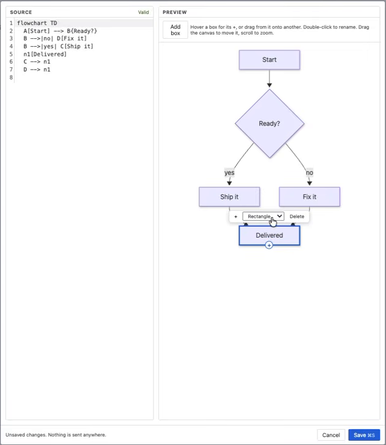
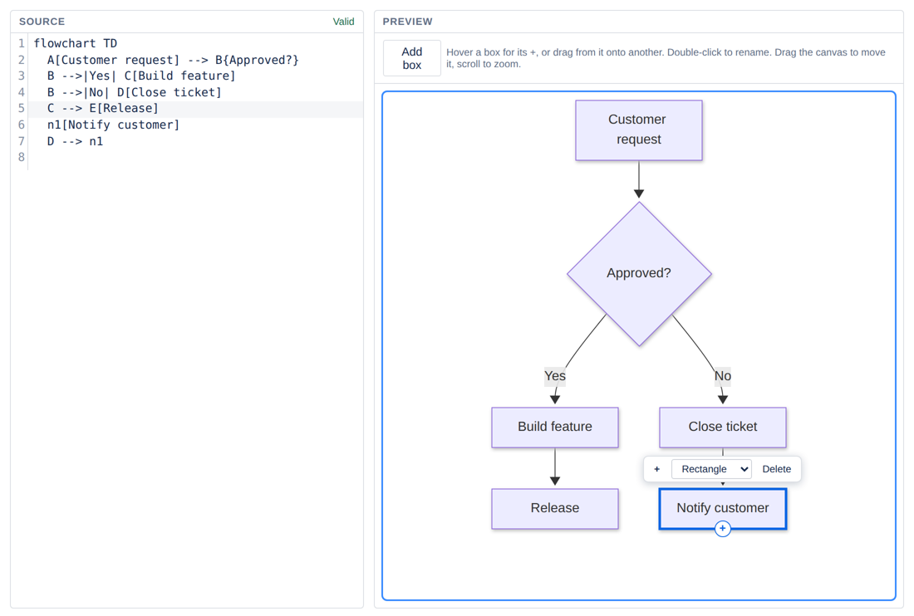

Edit Mermaid diagrams in Confluence Cloud by clicking
Visual Mermaid is a Confluence Cloud app for Mermaid diagrams: draw visually, write code, or paste from AI, and everything stays in sync. No syntax to learn, no login, nothing leaves Confluence.
Get it free on the Atlassian MarketplaceFree for up to 10 users · Runs on Atlassian · By Schneiderman Tech

Why teams choose Visual Mermaid
Edit by clicking
Rename, add, connect and delete boxes on the canvas. Anyone can update a diagram, not just the people who know Mermaid.
Code stays in sync
Every click rewrites the Mermaid source, keeping your comments and order. Edit the text and the canvas redraws.
Paste from any AI
Paste Mermaid from any AI tool and fix it visually. Already have code blocks? Render them all in one step.
Secure by design
No account, no external servers. The diagram lives in the page and is versioned with it.
Code or shapes? Keep both
Other tools make you pick: keep the Mermaid code and edit text only, or convert to shapes and lose the code. Visual Mermaid gives you one diagram you can edit both ways.
| Approach | Edit by clicking | Keeps Mermaid code |
|---|---|---|
| Code-only Mermaid macros | No | Yes |
| Convert Mermaid to drawing shapes | Yes | No |
| Visual Mermaid | Yes | Yes |

Questions
Does Confluence Cloud support Mermaid diagrams?
Not natively. Confluence Cloud shows Mermaid code as a plain code block. An app such as Visual Mermaid renders it as a diagram inside the page.
Can I edit a Mermaid diagram without knowing the syntax?
Yes. Double-click a box to rename it, click + to add the next step and drag to connect boxes. The Mermaid code is rewritten for you.
How do I convert existing Mermaid code blocks into diagrams?
Open the page's ••• menu and choose Render all Mermaid code blocks. Every block becomes a live, editable diagram.
How do I add a Mermaid diagram to a Confluence page?
Install Visual Mermaid from the Atlassian Marketplace, type /Visual Mermaid on any page, then draw or paste Mermaid code.
Is my diagram data sent outside Confluence?
No. The app runs on Atlassian, makes no external network requests and needs no extra account.
How much does it cost?
Free for Confluence Cloud sites with up to 10 users.